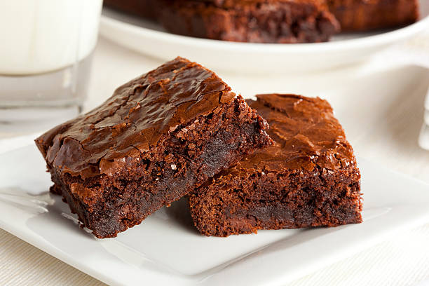

Receta de Brownie
Indice

Descripcion
El brownie es uno de los postres más emblemáticos de la repostería estadounidense, nacido a finales del siglo XIX. Su origen se atribuye a un accidente culinario: una cocinera olvidó añadir levadura a un pastel de chocolate, dando como resultado un bizcocho denso, húmedo y con una textura única. Desde entonces, el brownie se ha convertido en un clásico que ha conquistado paladares en todo el mundo, adaptándose a distintos gustos y tradiciones. Su versatilidad ha permitido crear innumerables versiones, desde las más tradicionales hasta aquellas que incorporan frutos secos, trozos de chocolate o incluso ingredientes innovadores como sal marina o caramelo.
Preparar brownies es más que seguir una receta; es recrear un momento de indulgencia y calidez. Cada trozo combina el sabor intenso del cacao con una textura que se derrite en la boca, perfecta para acompañar un café o una bola de helado. Más allá de su sencillez, este postre simboliza la unión entre lo casero y lo gourmet, lo cotidiano y lo especial. Por eso, ya sea horneado para una ocasión especial o simplemente para disfrutar una tarde tranquila, el brownie sigue siendo un símbolo de placer y tradición en la cocina dulce.
Ingredientes
- 200 g de chocolate oscuro (de buena calidad)
- 120 g de mantequilla
- 150 g de azúcar
- 2 huevos
- 1 cucharadita de esencia de vainilla
- 80 g de harina de trigo
- 1 pizca de sal
- 50 g de nueces picadas (opcional)
Pasos
- Preparar el horno y el molde: Precalienta el horno a 180 °C (350 °F). Engrasa un molde cuadrado o cúbrelo con papel para hornear.
- Derretir el chocolate y la mantequilla: Coloca ambos en un recipiente resistente al calor y derrítelos a baño maría o en el microondas en intervalos cortos. Mezcla bien hasta obtener una textura suave y brillante.
- Añadir el azúcar y la vainilla: Incorpora el azúcar al chocolate derretido y remueve hasta integrar. Luego añade la esencia de vainilla.
- Agregar los huevos:Incorpora los huevos uno a uno, batiendo después de cada adición para que la mezcla quede homogénea y brillante.
- Incorporar los ingredientes secos:Tamiza la harina y la sal, luego añádelas a la mezcla de chocolate. Mezcla con movimientos suaves hasta que no queden restos de harina (no batas en exceso).
- ñadir las nueces (opcional):Si deseas, agrega las nueces picadas y mezcla ligeramente para distribuirlas.
- Hornear: Vierte la mezcla en el molde preparado y extiéndela de manera uniforme. Hornea entre 20 y 25 minutos, o hasta que al insertar un palillo en el centro, este salga con algunas migas húmedas.
- Enfriar y servir: Deja enfriar el brownie dentro del molde antes de cortarlo en cuadrados. Disfrútalo solo o acompañado de helado, frutas o un toque de salsa de chocolate.